18 Septiembre 2025
¡Dátame! Las charlas de LCD
Se puede escuchar la forma de una cancion?
XIMENA FERNANDEZ
City St George's University of London
Los datos suelen tener topologias no triviales
Los datos suelen tener topologias no triviales

Los datos suelen tener topologias no triviales
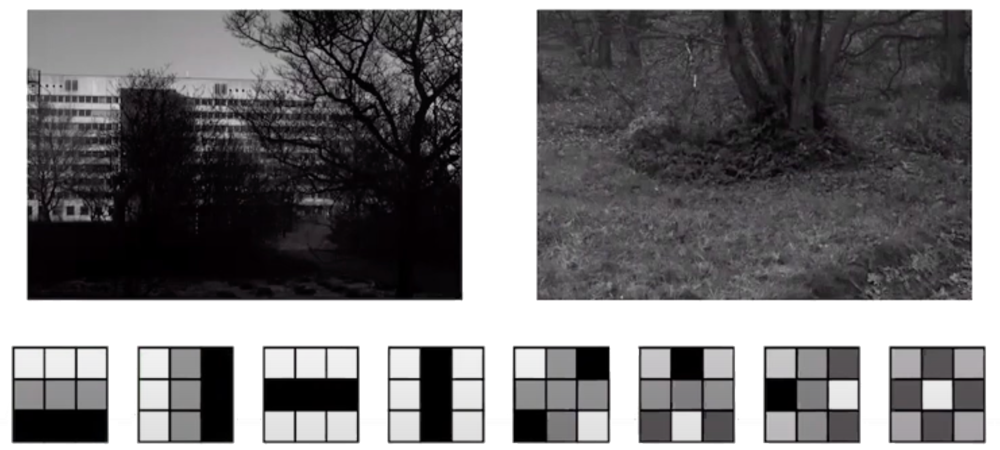
Los datos suelen tener topologias no triviales

Análisis topológico de datos
Input dataset $X$.
- Combinatoria: construir una filtracion $\{X_t\}$ de complejos alrededor de $X$, donde el índice $t$ es un parámetro de escala en $\mathbb{R}_{\geq 0}$.
- Topología algebraica: calcular los espacios vectoriales de homología $H_k(X_t)$ para escalas $t \in \mathbb{R}_{\geq 0}$ y dimensiones $k \in \mathbb{Z}_{\geq 0}$.
- Teoría de representaciones: descomponer cada familia de espacios vectoriales $\{H_k(X_t)\colon t \geq 0\}$ en sumandos indescomponibles, produciendo así un barcode.

Source: Ali et al. (2023)
Análisis topológico de datos
APLICACIONES
DONUTAnalisis topologico de audio
Colaboración con Spotify
Problema: Dadas dos pistas de audio, identificar si corresponden al mismo contenido de audio.
$~~~~~~~~~~$
 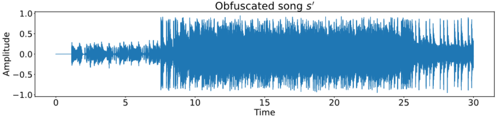
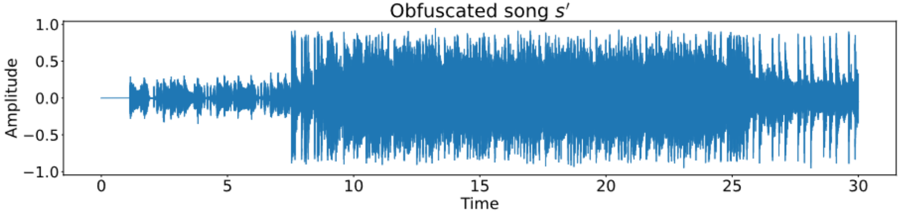
Representación de audio
Representación de audio
- Waveform: Una función continua $s\colon[0,T] \to \mathbb{R}$.


Representación de audio
- Transformada de Fourier (discreta): Dados valores de tiempo equi-espaciados de la señal $(s_n)_{n=1}^{N}$ en $[0,T]$ y una discretización del rango de frecuencias $\{f_m\}_{m=1}^{M}$, la magnitud de la frecuencia $f_m$ alrededor de $t_n$ está dada por \[ \widehat{S} (n, m) = \sum_{k=-\infty}^\infty s_k \omega_{k-n}\exp\left(-i k f_m\right), \] donde $(\omega_k)_k$ es una versión discreta de una función ventana. 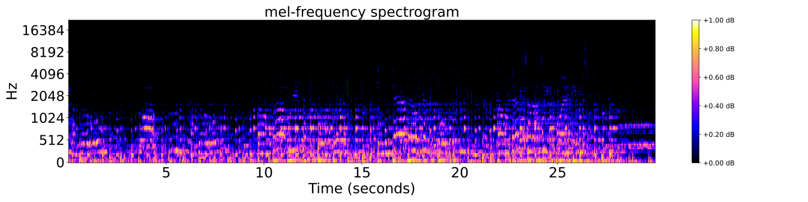
Representación de audio


Identificación de fingerprints de audio
Identificación de fingerprints de audio
 Shazam (2003)
Shazam (2003)
Identificación de fingerprints de audio
 Shazam (2003)
Shazam (2003)
- Detección de maximos locales:
Para cada $n,m$, comparar $\widehat{S}(n,m)$ con el promedio de intensidades en un entorno $N(n,m)$.
Identificar $(n,m)$ tal que $\widehat{S}(n,m) > \sum_{(n',m') \in N(n,m)} \widehat{S}(n',m')$.


Comparación de pistas de audio
 Shazam (2003)
Shazam (2003)
- Matching: Dadas dos pistas, matchear pares de fingerprints que coincidan.


Comparación de pistas de audio
 Shazam (2003)
Shazam (2003)
- Score: Calcular el histograma de diferencias de tiempo para cada par de fingerprints matcheados. El score de un matching es el tamaño de la barra más alta.


Distorsiones de pistas de audio
- Pista original
- Ruido
- Reverberación
- Filtro low-pass/high-pass
- Cambio de tempo
- Cambio de pitch
Distorsiones de pistas de audio

 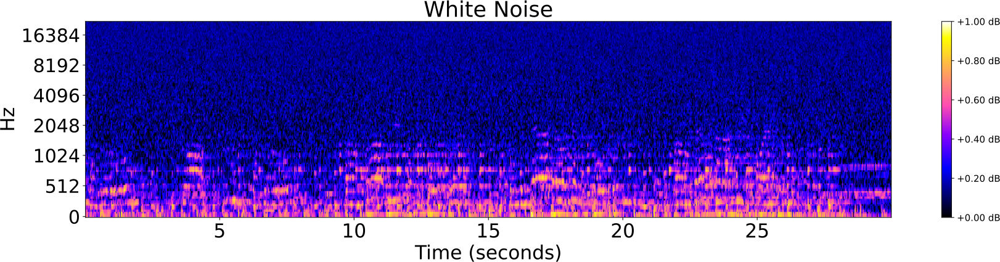
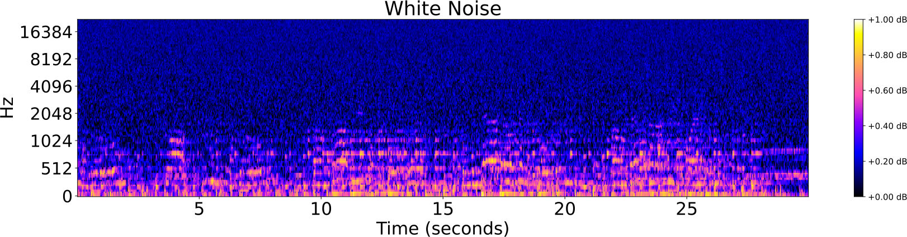
 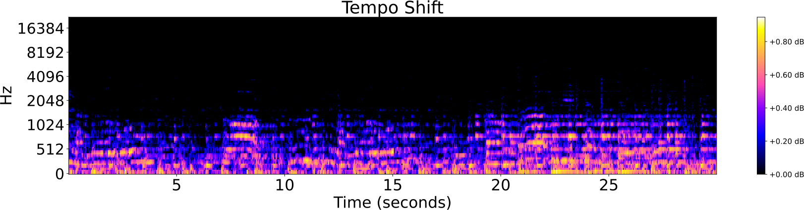
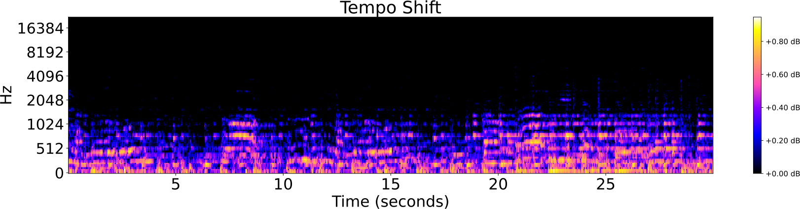


Identificación de audio
Estudio de caso:
 Shazam
Shazam
- El algoritmo tiene buena performance para distorsiones rígidas de pistas de audio, como:
- adición de ruido,
- filtro high-pass/low-pass,
- reverberación.
- El algoritmo tiene mala performance para distorsiones topológicas de pistas de audio, como:
- cambio de pitch,
- cambio de tempo,
- distorsiones mixtas; por ejemplo Music Obfuscator de Ben Grosser (2015).
Identificación 'topológica' de audio
Topología de espectrogramas


Topología de espectrogramas
Mel-espectrogramas como complejos cúbicos filtrados
Topología de espectrogramas
Mel-espectrogramas como complejos cúbicos filtrados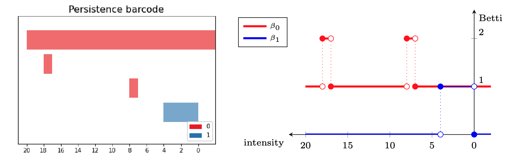
Fingerprints topológicos
Fingerprints topológicos
Sea $ S$ el mel-espectrograma de una pista de audio $s:[0,T]\to \mathbb{R}$.

- Descomposiciones espectrales locales: Dada una ventana $\omega$ y un coeficiente de overlapping $0<\tau<1$, subdividimos $ S$ en un conjunto de ventanas solapadas $W_0, W_1, \dots, W_k$ de duración $\omega$ segundos. Normalizamos el rango de cada ventana como $\frac{W_i-\min(W_i)}{\max(W_i)-\min(W_i)}.$ Sea $t_i$ el punto medio de $W_i$.


Fingerprints topológicos
Sea $ S$ el mel-espectrograma de una pista de audio $s:[0,T]\to \mathbb{R}$.
- Firmas de persistencia locales: Para cada ventana normalizada $W_i$, calculamos la homología persistente del complejo cúbico filtrado asociado, para dimensiones 0 y 1. Codificamos los barcodes persistentes como una familia de curvas de Betti $\{\beta_{i,0}\}_{i=0}^{k}$ y $\{\beta_{i,1}\}_{i=0}^{k}$ para dimensiones 0 y 1, respectivamente. 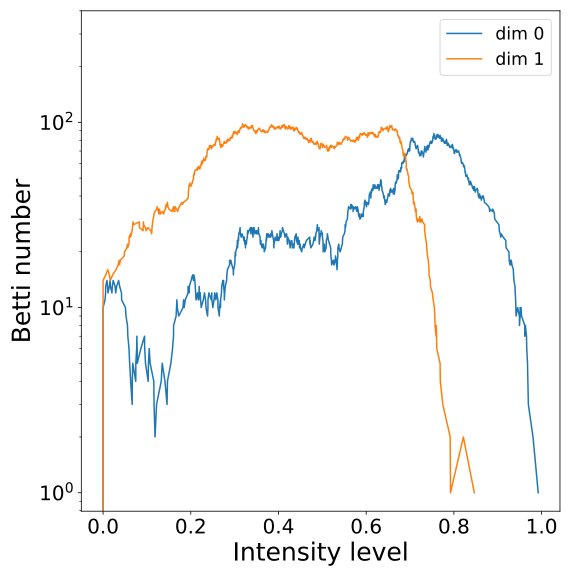


Fingerprints topológicos
Sea $ S$ el mel-espectrograma de una pista de audio $s:[0,T]\to \mathbb{R}$.
- Fingerprint: La huella topológica de la pista $s$ con la resolución dada por los parámetros $\omega$ y $\tau$ se define como el conjunto de triples ${(t_i, \beta_{i,0}, \beta_{i,1})}_{i=0}^{k}$.
$~~~~~~~~~~~~t_0~~~~~~~~~~~~~~~~~~~~~~~t_1~~~~~~~~~~~~~~~~~~~~t_2~~~~~~~~~~~~~~~~~~~~~t_3~~~~~~~~~~~~~~~~~~~~~~t_4~~~~~~~~~~~~~~~~~~~~~t_5 \dots$
Comparando fingerprints
Comparando fingerprints
- Distancia: Sean $s$, $s'$ dos pistas de audio y ${(t_i, \beta_{i,0}, \beta_{i,1})}_{i=0}^{k}, {(t_j', \beta'_{j,0}, \beta'_{j,1})}_{j=0}^{k'}$ sus fingerprints asociados.


$~~~~$


$~~~~~~~~~~~~~~~~t_0~~~~~~~~~~~~~~~~t_1~~~~~~~~~~~~~~~~t_2~~~~~~~~~~~~~~~t_3~~~~~~~~~~~~~~~t_4~~\dots~~~~~~~~~~~~~~~~~~t'_0~~~~~~~~~~~~~~~~t'_1~~~~~~~~~~~~~~~~t'_2~~~~~~~~~~~~~~~~t'_3~~~~~~~~~~~~~~~t'_4~~\dots$
Comparando fingerprints
- Distancia: Sean $s$, $s'$ dos pistas de audio y ${(t_i, \beta_{i,0}, \beta_{i,1})}_{i=0}^{k}, {(t_j', \beta'_{j,0}, \beta'_{j,1})}_{j=0}^{k'}$ sus fingerprints asociados.
Para cada dimensión homológica $d=0,1$, la matriz de distancias las curvas de Betti $d$, $M_d$, entre $s$ y $s'$ se define como \[ (M_d)_{i,j} = \Vert \beta_{i,d} - \beta'_{j,d} \Vert_{L^1}. \]
Definimos la distancia entre cada par de ventanas $W_i$ y $W_j'$ como \[ C_{i,j} = \lambda (M_0)_{i,j} + (1-\lambda) (M_1)_{i,j} \] para un parámetro $0 \leq \lambda \leq 1$.
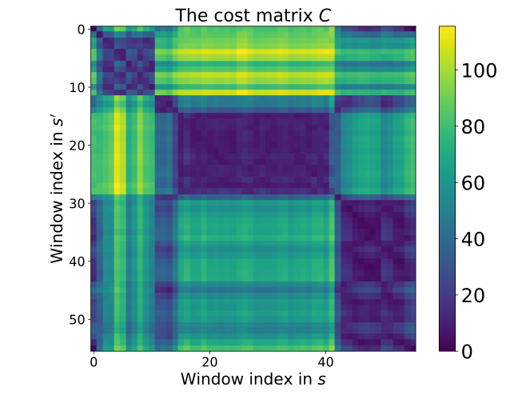
Comparando fingerprints
- Matching: Comparamos $s$ y $s'$ mediante un matching de costo mínimo en $C$.

Comparando fingerprints
- Score: Cuantificamos el grado de preservación del orden temporal en el matching. Supongamos que $k < k'$. Sea $P = \{(t_1, t'_{j_1}), \dots, (t_i, t'_{j_k})\}$ el conjunto de puntos medios de las ventanas matcheadas, con $t_1< t_2< \dots < t_k$.

Comparando fingerprints
- Score: Como antes, definimos $P$.
Para $m \geq 1$, calculamos $\bar t'_{j_i} = \mathrm{median}\{t_{j_{i-m}},\dots, t_{j_{i-1}}, t_{j_i}, t_{j_{i+1}}, \dots, t_{j_{i+m}}\}$, la mediana móvil en $t_{j_i}$. Consideramos $\bar P = \{(t_i, \bar t'_{j_i}): i=1,\dots,k\}$.

Comparando fingerprints
- Score: Definimos $P$ y la mediana móvil como antes.
Evaluamos la dependencia funcional monótona creciente de los puntos en $P$ como \[ \rho_{\bar P} = \mathrm{Pearson}\{(t_i), (\bar t'_{j_i})\}. \]
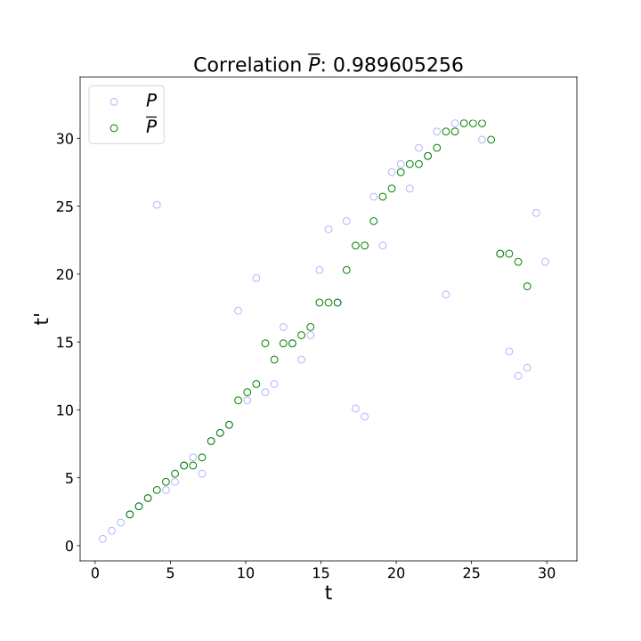

Resultados Experimentales
Resultados Experimentales
Music Obfuscator de Ben Grosser
| Canción | Shazam (60 seg) |
|---|---|
| Smells Like Teen Spirit | No |
| Get Lucky | No |
| Giant Steps | No |
| Stairway to Heaven | Sí |
| Headlines | Sí |
| Blue in Green | No |
| You’re Gonna Leave | No |
| Blue Ocean Floor | No |
Resultados Experimentales
Spotify Database + PySOX Transformer
 Spotify Web API. Dataset de fragmentos de 30 segundos de ~135.000 canciones.
Spotify Web API. Dataset de fragmentos de 30 segundos de ~135.000 canciones.- PySOX Transformer. Cada pista de audio fue manipulada según siete tipos de distorsiones con distintos grados de magnitud.
- Pares positivos y negativos. Para cada tipo de distorsión y grado, generamos 1000 pares positivos al azar (36000 en total) y 36000 pares negativos.
| Tipo de distorsión | Grado |
|---|---|
| Filtro low-pass | 200, 400, 800, 1600, 2000 |
| Filtro high-pass | 50, 100, 200, 400, 800, 1200 |
| Ruido blanco | 0.05, 0.10, 1.20, 0.40 |
| Ruido rosa | 0.05, 0.10, 1.20, 0.40 |
| Reverberación | 25, 50, 75, 100 |
| Tempo | 0.50, 0.80, 1.1, 1.2, 1.50, 2.00 |
| Pitch | -8, -4, -2, -1, 1, 2, 4, 8 |
Resultados Experimentales
(Accuracy)